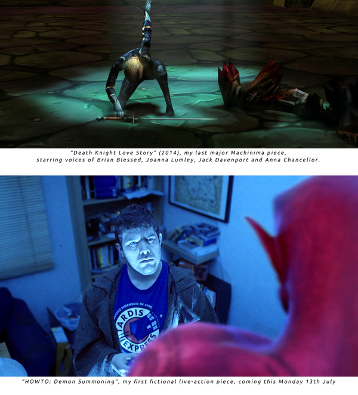

Why The Guy Who Coined “Machinima” Is Now Making Live-Action Films
I made my first Machinima – in-game animation – film in 1997. That was three years before I coined a word – Machinima – to describe the weird animation stuff I was doing, based on the suggestion of fellow Machinima pioneer Anthony Bailey.
I worked in the medium between then and 2014. But now, a year later, I’ve got 4 story projects going and none of them is Machinima. On Monday, I release my first ever live-action (fiction) film, HOWTO: Demon Summoning ( click here to get updated when it comes out ). It’s set in a world of Lovecraftian horrors and disgruntled techies, it uses a lot of technology I developed in Machinima, but it’s not Machinima.
Why?

Part of it is that Machinima falls uncomfortably between the “film” and “game” stools, which causes problems of its own. That’s something I’ll talk about another time.
But the main reason is that it feels like film – or, more accurately, digital video – is finally taking up the mantle which I felt Machinima alone held for so long: that of a truly democratic filmic medium.
It’s not so much that Machinima got worse; it’s that film got far, far better.
What Do I Mean By A Democratic Medium?
But wasn’t film democratised way back when, in the early 2000s or even the late 90s?
Not at all. It became more accessible, certainly. Digital video opened up the possibility of creating a feature film to thousands of people who couldn’t consider it before. But it still had a long way to go.
The reason for the massive glut of indie horror movies and ‘mumblecore’ films – naturalistic dialogue, no lighting, few characters – is that digital video was a breakthrough, but it wasn’t the only breakthrough that live-action film needed. Cameras were cheaper, tape was far cheaper than film, and non-linear editing meant you could edit your film on a home computer rather than a Steenbeck rented by the hour, but plenty of things were still slow and awkward:
Lighting was a huge bugbear. Cameras required tons of light, and the only lights available were power-heavy tungstens, which would blow out ordinary 13-amp fuses.
Special effects were getting more sophisticated at the high end, but they still really weren’t any more practical at a garage-band level. Photorealistic 3D rendering took forever and required extremely expensive tools.
Props and set decoration required hours or days of scouring local shops or navigating the rudimentary options online.
Moving the camera was a nightmare. You could pick it up for the Blair Witch / Paranormal Activity vomitcam look, or you could stick it on a tripod. But if you wanted to do long, sophisticated moving shots, you were looking at a Hollywood budget again.
Consumer or prosumer digital video cameras still weren’t capable of film quality. They didn’t have interchangeable lenses, and they didn’t produce footage that looked as nice as film.
“Fix it in post” was still a phrase cursed in the industry. You could do wonders with film thanks to new digital tools – but those digital tools were expensive, slow and unreliable.
It was possible to make a film for very little money, and have it stand up – but not any film. The film had to be very precisely tailored for the medium.
You could tell a story, but not any story.
And that’s the reason I went into Machinima, made my first feature film using the medium, engaged Brian Blessed and Joanna Lumley to make a WoW movie, and so on. I was fully aware of digital video, but I didn’t want to either massively restrict my stories or go into the traditional movie death spiral of endless fundraising and zero filmmaking.
In 2015, The Barriers Are Lifting
Those barriers, and the many other problems in live-action film, certainly haven’t vanished in 2015. But it feels to me like we’ve reached the tipping point, and that’s why I’m diving into real-world filmmaking at last.
Embarassingly for someone best known for doing clever things with 3D animation packages, the biggest changes have come from much simpler special effects tools. In particular Adobe After Effects, the mostly-2D compositing tool, has changed filmmaking and continues to do so.
Here’s an example of genius pioneer Gareth Edwards’ work using After Effects and similar tools to create massive battles with a tiny crew. I first became aware of Edwards when Justin Hall, whom I worked with on my feature film Bloodspell, edited Edwards’ first feature, Monsters. Subsequently, watching his work is one of the major reasons I’ve made the switch:
A lot of simple tools come together at once to cause this tipping point – and it’s not necessarily that the tools are available now, but that they’re evolved now.
It’s not just greenscreening, for example: that’s been around forever. But it’s also the evolution of greenscreening tools from massively time-intensive pains in the ass to things that I can use to create a 15-minute lecture in a single day from greenscreen footage.
3D camera move tracking has been around forever too, but it used to be useless unless you wanted to spend a month on a single shot. Now I can take a video with my DSLR, run it through some simple software and have a Minecraft zombie walking around, perfectly synced, within half a day:
Desk Zombie from Strange Company on Vimeo.
HOWTO: Demon Summoning wouldn’t have been possible to make without that tech. I’d still have been tracking my handheld camera shots for my CGI character next July.
And so it goes on. Lighting is one of the really big things that pushed me into live-action: where film used to require those massive, hot, dangerous lights, I can now use a Sony a7s camera capable of shooting really nice footage using only the light of the stars and the moon.
We shot much of HOWTO: Demon Summoning by the light of 4 tealight candles.
Likewise, if I need light, I can use a magic battery-powered stick – the Westcott Icelight – that generates pro-photographer quality light for hours with no leads and almost no weight. That made a hell of a difference on another upcoming short, Dangerous Treasures, where we had to rapidly move from room to room setting up shots, and the Icelight meant I could do that in minutes.
Where I would once have had to employ a team of sweating grips and miles of track, I can now use a gimbal: essentially, a robot which stabilises my camera and transforms wobbly handheld movements into silky-smooth dolly shots. On HOWTO that let me move the camera with the same sort of freedom I’m used to having in a 3D program, rather than being limited to the old-school low-budget approach of tripod or wobbly handheld.
And where I would have had to employ props masters just to source all the weird and wonderful props I needed, I can now just search on eBay or Amazon for bizarre sacrificial knives or props for a crack pipe.
It’s becoming amazing.
And this is just the beginning
Experienced filmmakers and videographers will be getting terribly cynical at this point. Filmmaking is, as of 2015, certainly not yet cheap, effortless or completely without budgetary constraints.
Tools are still finnicky and require powerful PCs. Cameras are expensive, they’ve got poor UI and they require a massive pile of support equipment. Certainly, you can make a film with a crew of two, but it’s not easy.
All of that is true, no question. But the thing is, we’re not at the end of this journey. We’re at the beginning.
Cameras are going to get smaller, faster and easier to use. MUCH smaller, faster and easier. We’re already seeing feature films shot on an iPhone which get into Sundance, and this isn’t an ‘in spite of how they look’ deal, either.
That was shot on an iPhone 5s. It’s universally acknowledged that the camera on the iPhone 6 is far better.
For a look at the future, look at GoPro. For those who aren’t aware, GoPro produce ‘action cameras’ – incredibly ruggedised cameras designed for use by people engaging in action sports. Note that I didn’t say, ‘people filming people engaging in action sports’. I mean: ‘for use whilst you’re climbing, skydiving or otherwise doing something that really requires your full attention’.
GoPro have just brought out a new camera. It’s absolutely tiny. It produces very nice footage; it’s not competing with top-end cameras, but the footage is perfectly usable for professional production.
And it has one button. Press to start recording, press again to stop.
That’s the level of ease we’re heading toward.
I just bought a new camera to use as a B camera, and immediately used it extensively in Dangerous Treasures. BTW, it’s also my phone.
I wrote a piece a month or so ago looking at the rise of robot cameras – things that can film, move and follow action autonomously. The first generation of those will spend a lot of time crashing into trees. The seventh generation won’t.
And so on.
We’re on the slope now. We’re gathering speed toward a world where making a film isn’t easy – it’ll never be easy to create good art – but it’s no harder than cracking open a copy of Scrivener is for authors.
And that’s why I’m suddenly interested.
Want to see the first example of what I can achieve with this stuff? As I said, HOWTO: Demon Summoning is coming out on Monday. It’s a fun tale of a startup founder who got screwed by his colleagues, and now he’s out for revenge – with the aid of the Dark Arts, and by following a handy YouTube tutorial. What could possibly go wrong? Click here to get updated when it comes out.
And I’d love to hear what you think. Am I being too optimistic, or is this stuff really happening?